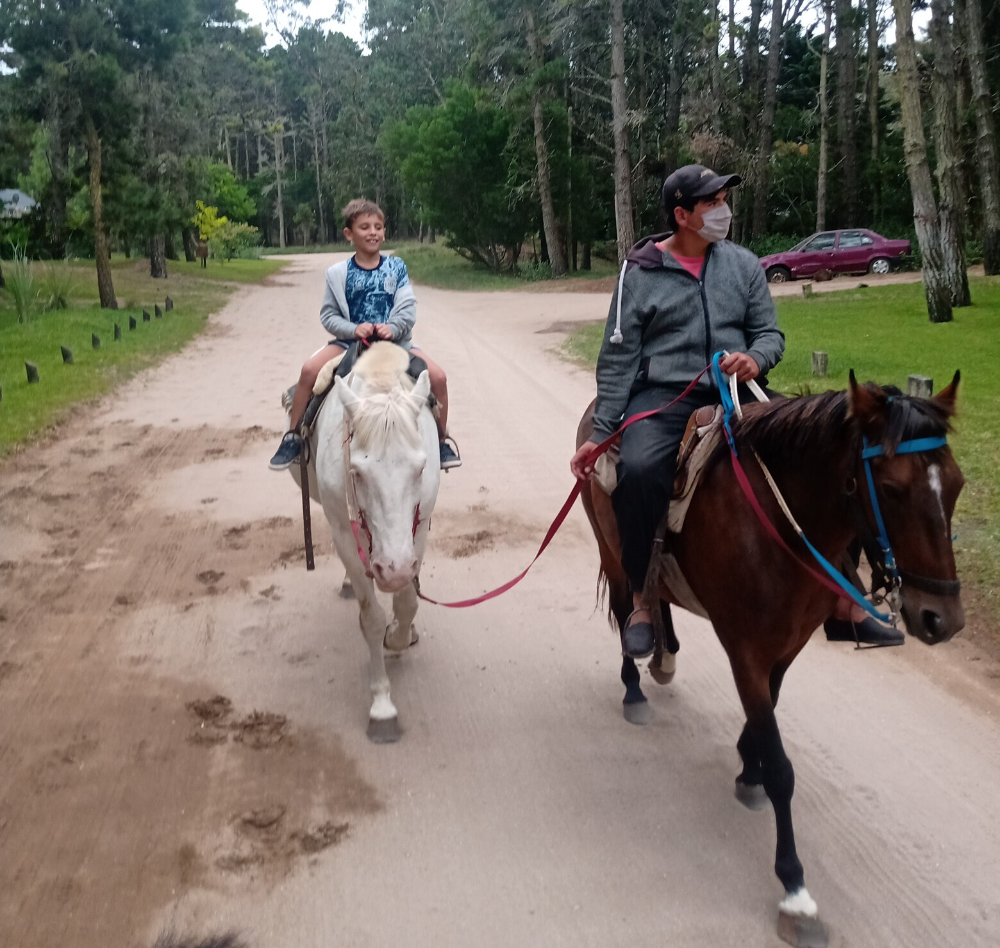

Si preferís disfrutar de la playa con la tranquilidad de contar con servicios, acercate a Soleado Parador de Playa, el único balneario de Mar de las Pampas.
Allí podés sumar a las amplias playas que caracterizan al lugar, la comodidad de alquilar una carpa o sombrilla con reposeras y disfrutar de refrigerios o comidas mirando al mar. Las playas de Mar de las Pampas y la zona se caracterizan por la presencia de grandes dunas de arenas ideales para practicar sandboard. Tambien podes optar por las travesias en cuatriciclo al Faro Querandí, es una experiencia inolvidable, en pleno contacto con la naturaleza y la historia del lugar. Dura aproximadamente 3 horas y se llega al Faro recorriendo los médanos más altos de la zona.

Sendero botanico
Creado por la SOFO (Sociedad de Fomento de Mar de las Pampas) con la idea de señalizar algunas especies de árboles y flora autóctona, tiene como fin dar a conocer un poco más de la historia de fijación y forestación de las dunas, es decir, acerca de la propia historia de Mar de las Pampas, que hace solo 50 años era sólo arena en movimiento. El Sendero comienza en la calle Padre Cardiel y Carlos Gesell, que era la calle de tránsito para llevar los plantines desde el vivero, hacia los lugares donde serian plantados. Continúa en línea recta dando la vuelta en José Hernández y luego por El Lucero y Juan de Garay.
Este recorrido consta de aproximadamente 20 cuadras de extensión y una duración de 70 minutos.

En Mar de las Pampas los centros comerciales no son como en las ciudades, son realmente paseos.
En general su arquitectura integra al bosque entre caminos zigzagantes donde vas encontrando de todo un poco para cada sentido: indumentaria, artesanías, restaurantes, cafeterías, juegos infantiles, jardínes, fuentes y cascadas, miradores, espectáculos al aire libre, muestras de arte, duendes y hadas. En varios de los paseos comerciales de Mar de las Pampas hay anfiteatros y espacios al aire libre donde se realizan espectáculos a la gorra para grandes y chicos. Podés disfrutar de títeres, música, teatro participativo para niños, magia, mimos y otras variedades con sólo acercarte al lugar al caer la noche.

Recorrer el bosque y la playa a caballo es una opción más que interesante para todos.
Los palenques se encuentran sobre el camino de arena que lleva a Villa Gesell (continuación de calle Las Acacias), pasando un poco la rotonda donde está el cartel que dice Mar de las Pampas a mano derecha. Allí se pueden alquilar caballos por hora o por día u optar por los paseos guiados.
Si te toca estar en Mar de las Pampas con luna llena no te podés perder las cabalgatas nocturnas, para las que en temporada alta te recomendamos reservar tu caballo con anterioridad ya que son muy solicitadas.

Mar de las Pampas posee una gran oferta gastronomica adaptandose a todos los paladares, con opciones que van desde comidas rapidas hasta platos gourmet. Ademas de sus ya tradicionales casas de té donde pasar las tardes sin playa deleitandose con la mejor reposteria casera, tambien cuenta con varias cervecerias artesanales y hasta una gintoneria.

Una de las opciones para llegar al Faro Querandí es sumandote a las excursiones guiadas en camiones o camionetas 4 x 4.
Incluyen paradas en los médanos más grandes y más claros de la zona para realizar sandboard. Aunque no tengas tu tabla, las empresas que te llevan te la proeverán.
Este es un paseo ideal para sacar fotos increíbles de playas vírgenes, dunas enormes, mar abierto, caracoles, gaviotas, ostreros y, por supuesto, del Faro.
El viaje de ida y vuelta dura aproximadamente 3 horas y te recomendamos que en todas las épocas del año lleves protector solar y rompevientos.